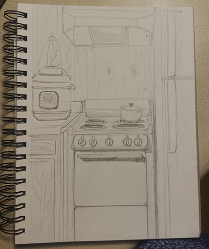
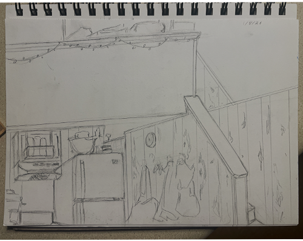

Art
This is where my mostly non-coding/non-fiber art lives. It's mostly digital and traditional drawings. If you're looking for coding or fiber art works, go to the 'Coding & Electronics' or 'Other Makes' pages respectively. I want the boring practice stuff AND the long projects to exist here together, so that's why things will look like a bit of a hodgepodge.

01/15/26: Caught
I drew this while thinking about predictive policing.

01/11/26: Observational drawing practice on oven
I drew this before bed as I had forgotten to do an observational drawing today and had wanted to. I had fun.

01/08/26: Observational drawing practice on random view of apartment